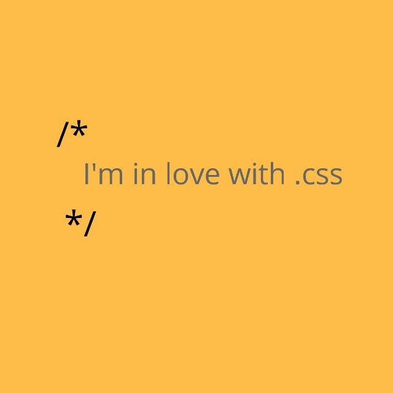

Launching my website (It's all fun!)
In February 2018, I was just few months into my journey of learning web development. It was a big task for me to learn not only the fundamental skills required, but also keeping track with the fast-moving industry. Just I was getting to the level where it felt as though I could build a simple website, I started to realize, it was only the beginning.
But I did it! And the best part is it wasn't as scary or difficult as it first felt. I've to admit how enjoyable it was when am finally able to do this stuff. And I've to thank Francis Hammond, for his inspiration. He actually did it first. Then I follow up.
how I built this site
When I first started learning web development, properly, I did a few courses on HTML for structure, CSS for styling (my favorite), and JavaScript for interaction, which at the crux of it is all you need to get a website on the internet, and you don't even need JavaScript as such.

I wanted to really immerse myself in this new world (Hello World!) of fronted development, and to do that I decided to research modern and standard techniques for web development.
And just like that, It was a misery.
Angular, Vue, React, GraphQL, Web Components, WordPress (heck fucked!), Laravel, Django, Atomic Design. Styled Components, Bootstrap, Sass, Less, Severless, Cloud Functions, Git, Github, Oh dear Lord.
The last one isn't a framework, or a library, or an architecture, or an API, or whatever. It's overwhelming feeling that came over me. There's so damn much going on in web (or software) development. It's awesome and terrifying.
I did a lot of research, read books, articles from awesome people in the community, and tricks that I have grown to respect, admire, and subscribed, and follow, and that led me to settle on CSS, HTML and presentational JavaScript.
The main technologies I used for this site were HTML, CSS, vanilla JavaScript, Netlify and NetlifyCMS. The choice to go these means I get super fast, resilient and accessible website, which include responsive images, great value hosting and open source content management system. Because I want my site to be standard and simple, I used more of HTML, of CSS, and less of JavaScript in the design process. This is actually called, progressive enhancement.
Anatomy
For now, the site consists of a few pages. There is this top navigation and a drop down menu. The home page introduces everything within the site. I wanted to create quality things, especially on the web, so I presented the myself more in the about me page, this is nothing more than a profession. The gallery page was designed to learn more about image manipulation, but it was fun. I referenced some links, books, videos (YouTube) and audios (Soundcloud), also for learning and fun!
Just as, I begin
I decide to continuing my journey into the world of fronted development. I love doing things, learning and seeing my jorgorlorjorgorlor (combination of scary and awkward) code and algorithm compiled, or transpiled, or interpreted into some jazzy colours and fonts, and layouts, and interactions, is a wonderful feeling. There's always more to learn, and that really ginger me.
A minute to learn, a lifetime to master.
And it's always good and glorious to bounce in, to explore, to
tinker out of, this world.
SO BOUNCE! AND MAKE MISTAKES! AND TINKER OUT! AND EXPLORE FOR MORE!